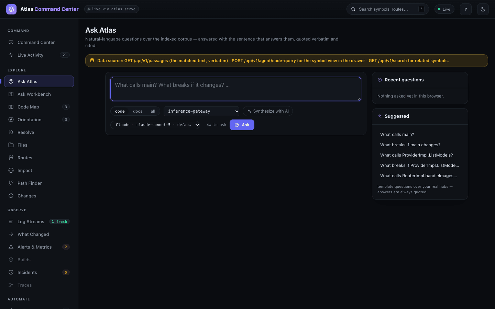
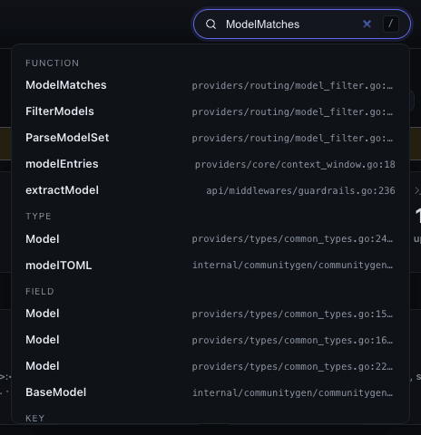
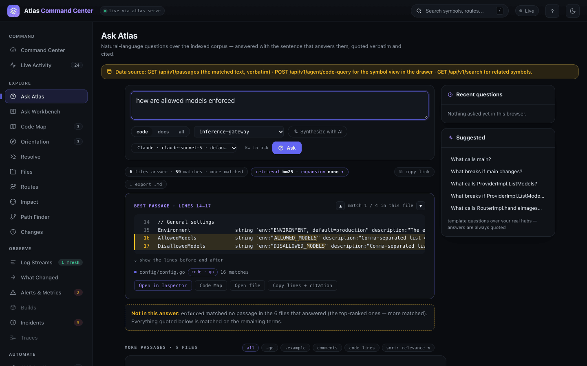
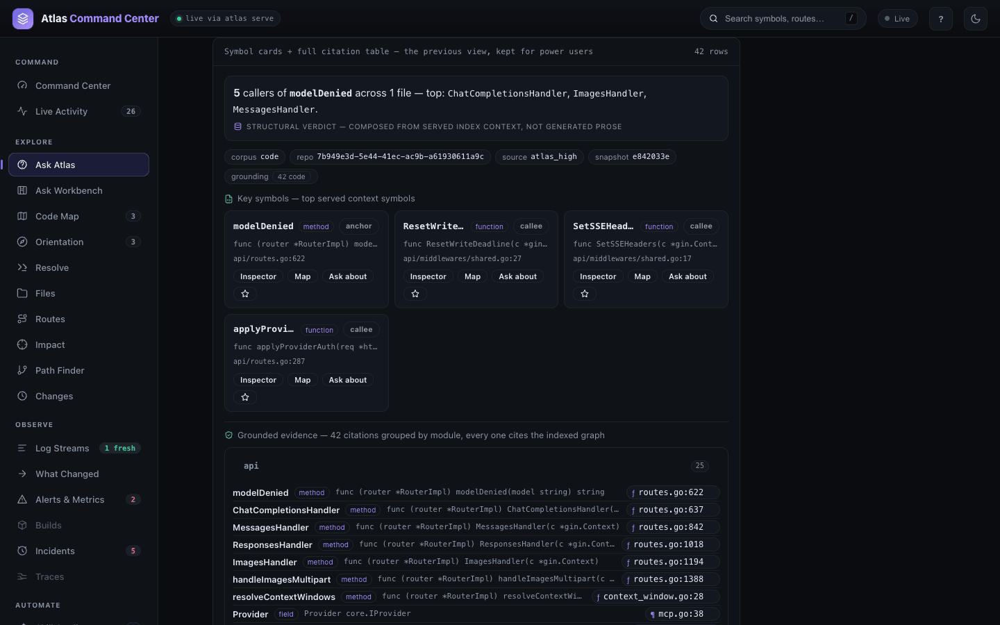
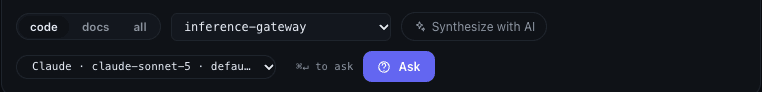
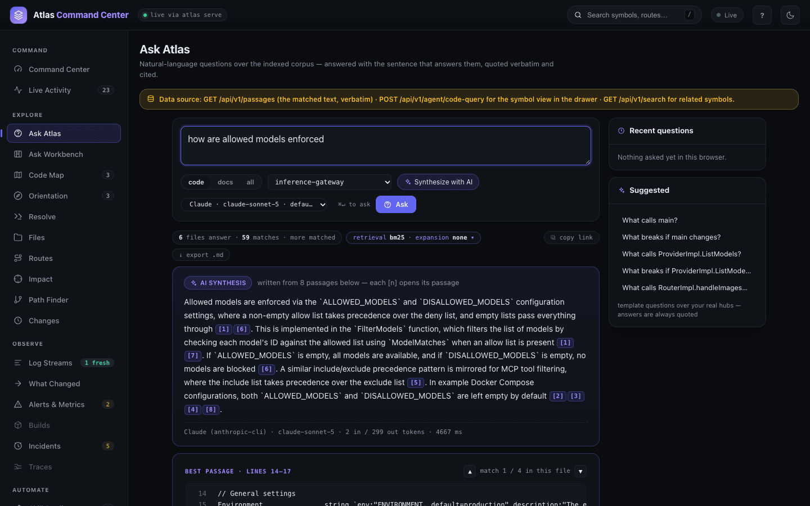

Search and Ask
Search finds a symbol, a file or a phrase when you know some of its words. Ask answers a question in plain language with the lines of code that answer it, quoted and cited — and, if you turn it on, a short AI-written answer built only from those lines. Use search when you are looking for a thing; use Ask when you are looking for an explanation.
Open It
Search lives in two places: the header box of the dashboard (Search symbols, routes…, shortcut /) and atlas search on the command line. Ask is Ask Atlas under EXPLORE, at #/ask.

Search for a Symbol
Type at least two characters into the header box. Atlas returns the matching definitions grouped by kind, each with its file and line; Enter opens the selected one in the inspector (The dashboard shows the whole flow).

Search is code-aware lexical search. In practice that means:
- It reads code names the way you type them. Identifiers are split on camelCase, snake_case, kebab-case, dots and slashes, and every piece is indexed beside the whole name.
allowedmodelsfinds theALLOWED_MODELSkeys;userfindsGetUserByID. - It ranks by BM25. A result where your words are rare and concentrated — in the name, the signature, the doc comment or the path — ranks above one where they are common and scattered.
- It forgives small typos. Trigram matching compares three-letter fragments, so
modlDeniedstill findsmodelDenied. - It searches paths too.
model_filter.goorproviders/routingname a file or folder; a path-shaped query ranks the file whose path is exactly that first. - Ties have one order. Since 0.1.55, results with equal scores come back by path, then name, kind, signature and line, so two fresh indexes of the same commit, at any worker count, return the same page in the same order (#135).
Results carry a kind: function, method, method_spec (an interface method), type, field, constant, key (a configuration or YAML key), and, from documentation, section and document. Filter with --kind, --path and --corpus on the command line.
Ask a Question
- Open Ask Atlas and pick what may answer: code, docs (READMEs, markdown sections, synced tickets) or all.
- Pick the repository, or all repos — federated.
- Type the question —
how are allowed models enforced— and press Ask or⌘↵.
The answer is the indexed text itself:

- The summary chip says how many files answer and how many matches there are (6 files answer · 59 matches); the retrieval chip names the method (bm25).
- BEST PASSAGE quotes the lines that match, highlighted, with arrows to step through the other matches in the same file. Open in Inspector, Code Map, Open file and Copy lines + citation act on it.
- Not in this answer names any word of your question that matched nothing — here,
enforced— so you know what the passages do not cover. - MORE PASSAGES lists the other files that matched, with filters by file type, comments or code lines.
- ASK NEXT offers follow-up questions built from the matched symbols, such as "what calls modelDenied?". These are templates, not generated text.
- copy link and export .md share the answer; Recent questions keeps what you asked in this browser.
Read the Exact Verdict
For questions about a symbol, the drawer at the foot of the answer — Symbol cards + full citation table — holds the exact verdict. It is composed from the index, not written by a model, and labelled as such.

The shape of the question decides the verdict. "What calls X", "who uses X" and "what breaks if X changes" get a callers verdict; "explain X" or "what is X" an explain verdict; "is there…" or "do we have…" an exists verdict; anything else a digest of the context the index served. Below the verdict come the key symbols (each with Inspector, Map, Ask about and a pin), the evidence grouped by module, and the full citation table.
Add an AI Answer
Synthesize with AI adds a short answer written by a model from the passages on the page. It is off by default and remembered per browser; the quoted passages stay the answer either way.
- Turn on Synthesize with AI.
- Check the model picker beside it. It shows the default provider and model; when more than one provider is ready it is a menu.
- Ask. The AI SYNTHESIS card appears above the passages.


- Every claim must cite a passage. Each
[n]chip scrolls to and highlights passage n. - A sentence the server's check finds no valid citation for is marked unsupported; a citation to a passage that was never sent is marked as pointing at nothing.
- The footer states the provider, model, tokens and time — here
Claude (anthropic-cli) · claude-sonnet-5 · 2 in / 299 out tokens · 4667 ms. - If no passage matched, no model is asked.
The model reads only the question and the retrieved passages with their paths. Which provider answers is set by atlas llm. With nothing configured, Atlas detects the claude and codex CLIs and the ANTHROPIC_API_KEY and OPENAI_API_KEY variables, and registers what is ready. The default is the one you chose with atlas llm default, else the first ready of anthropic-cli, openai-cli, anthropic, openai. Check it with:
atlas llm status
{
"configured": true,
"ready": true,
"provider": "anthropic-cli",
"transport": "cli",
"model": "claude-sonnet-5",
"model_source": "default",
"rung": "cli_login",
"rung_source": "claude login",
…
"egress": "the claude CLI sends the question and the retrieved passages with their paths to Anthropic under your login — nothing else leaves this machine",
…
"default": "anthropic-cli",
"default_source": "detected",
"providers": [ … ],
…
}The same providers, with a Test button for each, are under System → App integrations. Without a ready provider the toggle shows a note pointing there, and the passages answer alone.
For a conversation that keeps context across turns and pulls in git history, tickets and pull requests, use the Ask Workbench.
Semantic Search Is Off by Default
atlas semantic-search ranks symbols by embedding similarity instead of words. It needs embeddings, which the index does not build unless you ask (atlas index --enable-vectors with ATLAS_ENABLE_VECTORS=1). Without them it falls back to lexical search and says so:
atlas semantic-search "reject a model that is not allowed" --limit 3 --format plain
semantic_search mode lexical degraded true results 3
degraded_reason this snapshot has no embeddings — re-index with `atlas index --enable-vectors` to enable semantic ranking
isToolAllowed function internal/mcp/filter.go:32 :: func isToolAllowed(toolName, includeList, excludeList string) bool
FilterModels function providers/routing/model_filter.go:35 :: func FilterModels(models []types.Model, allowedModels, disallowedModels string) []types.Model
ALLOWED_MODELS key examples/docker-compose/mcp/.env.example:4 :: ALLOWED_MODELS=It is off because the lexical index already answers name and phrase lookups exactly and deterministically, with no model and nothing to download; embeddings add indexing time and storage. By default the embedder is an offline token-overlap model; set ATLAS_EMBED_URL to use a real embedding model. See Indexing and reindexing.
From the CLI
Each lookup the dashboard makes is a command. Output is from inference-gateway, in --format plain.
atlas search — the omnibox. --kind and --path filter; --corpus docs searches documentation only:
atlas search "allowed models" --kind function --limit 3 --format plain
search mode lexical total 3
matches 833 (page limit 3)
truncated true (retrieval saw fewer than the 833 matches; a larger --limit widens it, up to 20000)
FilterModels function providers/routing/model_filter.go:35 :: func FilterModels(models []types.Model, allowedModels, disallowedModels string) []types.Model
isToolAllowed function internal/mcp/filter.go:32 :: func isToolAllowed(toolName, includeList, excludeList string) bool
TestChatCompletionsRouting_AllowedModelsFiltersAlias function tests/api_routing_test.go:206 :: func TestChatCompletionsRouting_AllowedModelsFiltersAlias(t *testing.T)
atlas search modlDenied --limit 3 --format plain
search mode lexical total 2
matches 2 (page limit 3)
modelDenied method api/routes.go:622 :: func (router *RouterImpl) modelDenied(model string) string
FilterModels function providers/routing/model_filter.go:35 :: func FilterModels(models []types.Model, allowedModels, disallowedModels string) []types.Modelatlas symbol — a definition with its callers and callees, what the inspector opens with:
atlas symbol modelDenied --format plain
symbol modelDenied matches 1
modelDenied method api/routes.go:622-635
sig func (router *RouterImpl) modelDenied(model string) string
callers(5) ChatCompletionsHandler, ImagesHandler, MessagesHandler, ResponsesHandler, handleImagesMultipart
callees(6) Error, Error, ModelMatches, ParseModelSet, Error, Erroratlas snippet — the body itself, bounded:
atlas snippet modelDenied --format plain
snippet modelDenied definitions 1 resolved true
── api/routes.go:622-635
sig func (router *RouterImpl) modelDenied(model string) string
func (router *RouterImpl) modelDenied(model string) string {
if allowed := routing.ParseModelSet(router.cfg.AllowedModels); len(allowed) > 0 {
if !routing.ModelMatches(allowed, model) {
router.logger.Error("model not in allowed list", nil, "model", model, "allowed_models", router.cfg.AllowedModels)
return "Model not allowed. Please check the list of allowed models."
}
return ""
}
…
}atlas explain — a deterministic bundle: definitions, callers, callees, and the routes served from the same file:
atlas explain modelDenied
{
"symbol": "modelDenied",
"definitions": [
{ "kind": "method", "path": "api/routes.go", "line": 622, "end_line": 635,
"signature": "func (router *RouterImpl) modelDenied(model string) string" }
],
"callers": ["ChatCompletionsHandler", "ImagesHandler", "MessagesHandler", "ResponsesHandler", "handleImagesMultipart"],
"callees": ["Error", "ModelMatches", "ParseModelSet"],
"served_routes": [
{ "method": "GET", "path": "/health", "handler_file": "api/routes.go" },
{ "method": "POST", "path": "/chat/completions", "handler_file": "api/routes.go" },
…
],
…
}atlas callers lists the symbols that call a function; atlas refs adds type uses — parameters, fields, return types — which matters before a rename:
atlas callers modelDenied --format plain
callers modelDenied total 5
ChatCompletionsHandler method api/routes.go:637 :: func (router *RouterImpl) ChatCompletionsHandler(c *gin.Context)
ImagesHandler method api/routes.go:1194 :: func (router *RouterImpl) ImagesHandler(c *gin.Context)
MessagesHandler method api/routes.go:842 :: func (router *RouterImpl) MessagesHandler(c *gin.Context)
ResponsesHandler method api/routes.go:1018 :: func (router *RouterImpl) ResponsesHandler(c *gin.Context)
handleImagesMultipart method api/routes.go:1388 :: func (router *RouterImpl) handleImagesMultipart(c *gin.Context, target imagesMultipartTarget)
atlas refs CreateChatCompletionRequest --format plain
refs CreateChatCompletionRequest total 44
Middleware method api/middlewares/mcp.go:86 :: func (m *MCPMiddlewareImpl) Middleware() gin.HandlerFunc
handleMCPStreamingRequest method api/middlewares/mcp.go:242 :: func (m *MCPMiddlewareImpl) handleMCPStreamingRequest(c *gin.Context, request *types.CreateChatCompletionRequest, result *MCPProviderModelResult) error
…All flags are in the CLI reference.
How Fresh Is the Answer
Since 0.1.55, every answer about a repository says which snapshot it came from and whether the code has moved since: indexed_sha, head_sha, dirty, stale and stale_reason, the same on the CLI, over MCP and from the API (#59). Edit a file after indexing and the next lookup says so before anything else:
$ atlas snippet helper --format plain
stale: indexed 4fb9d0f74f1c vs head 4fb9d0f74f1c+dirty (working_tree_dirty) not refreshed (one-shot command; run `atlas index`)
snippet helper definitions 1 resolved trueresolved: true still means the symbol was found; stale: true means its line numbers and body may have moved. A one-shot command does not refresh in the background, so run atlas index ., or set ATLAS_ONESHOT_REFRESH=sync to refresh before answering (#141). Indexing uncommitted work stores its own <sha>+dirty snapshot beside the commit's — see Change lens and history.
Answers That Refuse Instead of Guessing
Keyword search always matches something, so a list of citations is not proof that the code answers the question. When an assistant or a script calls code_query with require_citations: true, since 0.1.55 the cited names and paths must carry what the question names — an identifier it spells, or enough of its specific words (#60). Otherwise the answer is status: "insufficient" with reason: "citations_below_relevance_floor", a relevance block naming the words nothing matched, and the nearest candidates as low_confidence_hits, never as citations. Asked about "the quantum flux capacitor module" in a repository that has none, Atlas now says so instead of citing a helper whose doc comment mentions "module". The fields are described in MCP tools.
Evidence Inside Large Functions
The index keeps the start and end of a long function body, not every line. Since 0.1.55, when a question is about something inside a long function — a route registered on line 1,005 of a 2,000-line setup function — code_query and context re-read the matching lines from the file, as long as the file still matches the index, and quote them with every skipped run marked // ... elided N lines (La-Lb) .... The answer's metadata.body_elision lists the line ranges shown, and the citation keeps the function's real range (#156).
From the API
The page names its own sources: GET /api/v1/search for the omnibox and related symbols, GET /api/v1/passages for the quoted passages, POST /api/v1/agent/code-query for the verdict drawer, and POST /api/v1/ask/answer for the AI answer, which streams and takes a provider per question. See Dashboard and API.
Related
- Ask Workbench — conversations with history, tickets and pull requests.
- The dashboard — the omnibox, the command palette and the inspector.
- Code Map and graph — see the callers and callees you found.
- AI assistant setup — the same lookups for assistants over MCP.
- Privacy and data — what leaves the machine, and when.